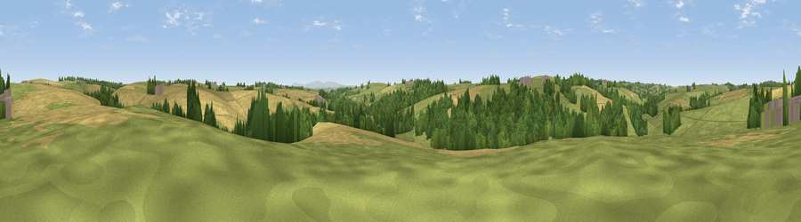

Viewpoint near Newton St Petrock
#36664 in England · top 82% of its area beats it · near Newton St PetrockThe view, rendered

A 360° render of this exact spot computed from the terrain model, tree cover and land cover — summer colours, afternoon light, calibrated against photographs of famous viewpoints. Real trees, hedges and buildings will differ in detail.
The panorama
Grey silhouette: terrain skyline in each direction (720 bearings, Earth curvature and refraction included). Dashed green: skyline with trees (+15 m) and buildings (+8 m) as obstacles. Blue strip: how far the ground is visible on each bearing.
Where the view opens
Wedge length = distance to the farthest visible ground on that bearing (vegetation-aware). Rings at 10, 25 and 50 km.
What fills the view
44% grassland · 34% cropland · 20% woodland · 1% built-up
Angular shares of the visible panorama (visual magnitude), not map area. Landscape diversity 0.48 (0–1 Shannon).
Key numbers
More beautiful places nearby
The staircase of upgrades: each row has a higher view potential than everything closer. Driving times are estimates from straight-line distance, calibrated against real road routing — check an actual route before setting out.
| Place | Direction | Drive | Score |
|---|---|---|---|
| Viewpoint near Newton St Petrock | WSW · 1 km | ~4 min | 47.8 |
| Viewpoint near Newton St Petrock | NNE · 2 km | ~6 min | 55.0 |
| Viewpoint near Parkham | N · 6 km | ~13 min | 61.8 |
| Viewpoint near Buckland Brewer | N · 7 km | ~15 min | 66.6 |
| Viewpoint near Parkham | N · 10 km | ~19 min | 69.2 |
| Viewpoint near Bucks Mills | NNW · 10 km | ~19 min | 84.0 |
| Viewpoint near Woolacombe | N · 29 km | ~45 min | 84.7 |
| Viewpoint near Crackington Haven | SW · 33 km | ~51 min | 88.1 |
50.90154, -4.28356 · source: screening · position refined by local search. Computed location — check access rights before visiting.